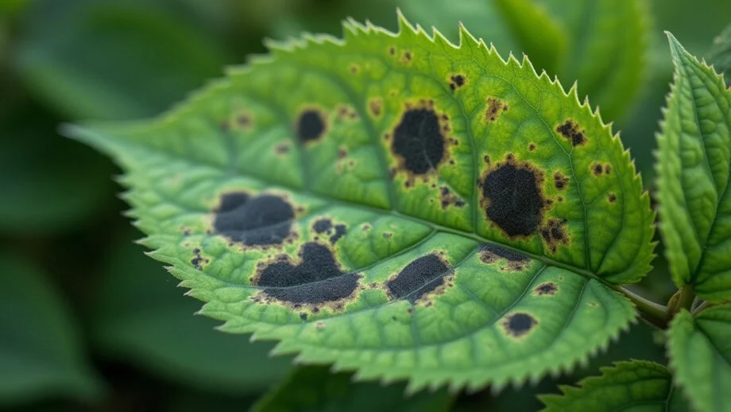
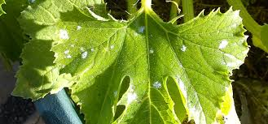
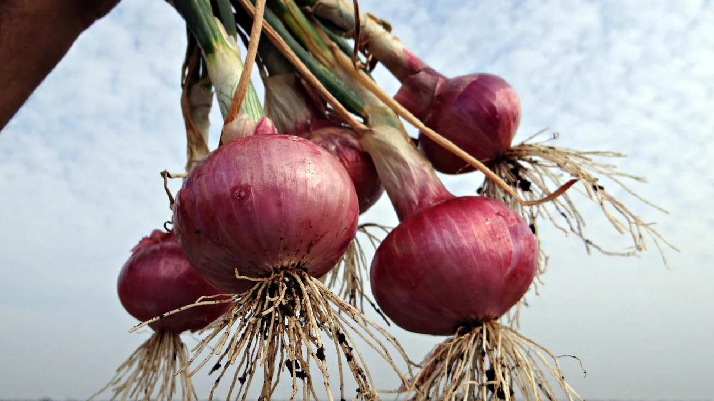
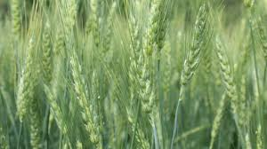
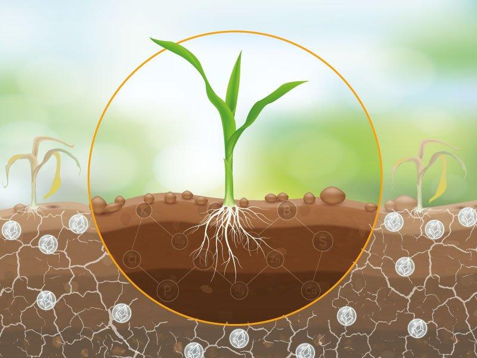
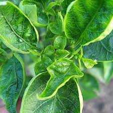
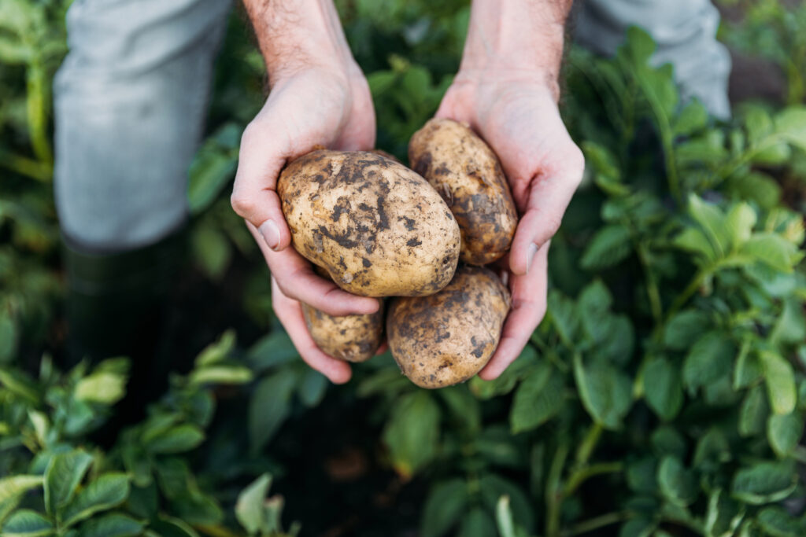
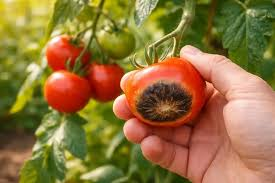
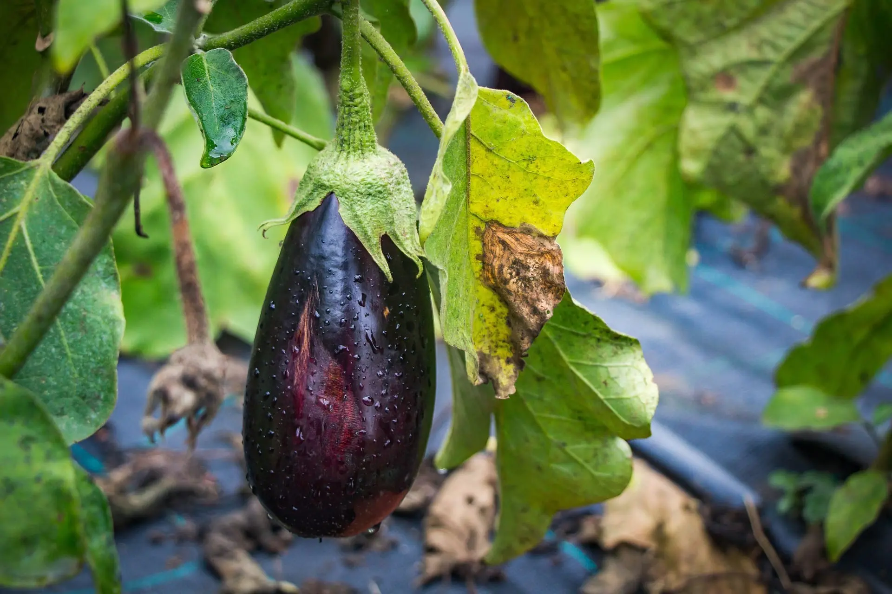

Leaf Spot
Crop: Tomato
Brown spots caused by fungus.
Solution: Use fungicide spray.
Understand crop problems easily and get the right solutions
Farming is the backbone of our country, but farmers often face serious challenges that affect crop health and productivity. Problems like plant diseases, pest attacks, water imbalance, and poor soil quality can reduce yield and cause financial loss.
Early identification of these issues is very important. If detected at the right time, farmers can take proper action and protect their crops effectively. This platform is designed to help farmers easily understand different crop problems with visual examples.
What you will find here:
✔ Common crop diseases and symptoms
✔ Causes of each problem
✔ Easy-to-understand explanations
✔ Smart guidance for better farming decisions
Goal: To support farmers with smart knowledge so they can increase yield, reduce loss, and practice modern agriculture techniques.


Crop: Tomato
Brown spots caused by fungus.
Solution: Use fungicide spray.

Crop: Vegetables
Insects damage leaves.
Solution: Use neem oil spray.

Crop: Rice
Nutrient deficiency.
Solution: Add nitrogen fertilizer.

Crop: Grapes
White powder on leaves.
Solution: Apply sulfur spray.

Crop: Onion
Roots decay.
Solution: Avoid overwatering.

Crop: Wheat
Unwanted plants grow.
Solution: Remove manually or herbicide.

Crop: All
Excess water harms roots.
Solution: Proper drainage.

Crop: Corn
Water shortage.
Solution: Use drip irrigation.

Crop: Rice
High salt in soil.
Solution: Use gypsum treatment.
Crop: All
Poor production.
Solution: Improve soil fertility.

Crop: Rice
Insects damage stem.
Solution: Use insecticide.

Crop: Chili
Leaves curl.
Solution: Control whiteflies.

Crop: Potato
Fast disease spread.
Solution: Use fungicide.

Crop: Tomato
Fruit decay.
Solution: Proper storage.

Crop: Brinjal
Plant droops.
Solution: Maintain water balance.